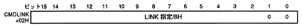

Return to previous page ｜ Return to menu ｜ Go to next page
-
6.2 CMDLINK (LINK specification)
- CMDLINK specifies the address of the command table to be processed next when assigning or calling is specified in jump format. Specify 16 bits of command table start address + 02H.

- CMDLINK: Command table start address + 02H
- When the command table being processed is completed, if the jump format is assigned, the command table moves to the command table at the CMDLINK address. If it is a call, the command table at the CMDLINK address is called as a subroutine, and the command table to be processed next The process moves to.
The address is specified by dividing the VRAM address by 8H in 16 bits. The command table is stored in the 20H (32) Byte unit boundary, so the lower 2 bits of CMDLINK are 00H.
This CMDLINK is ignored when the jump format (JP) is set to the next table or to return to the main routine.
Return to previous page ｜ Return to menu ｜ Go to next page